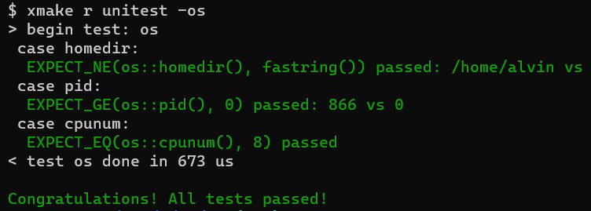
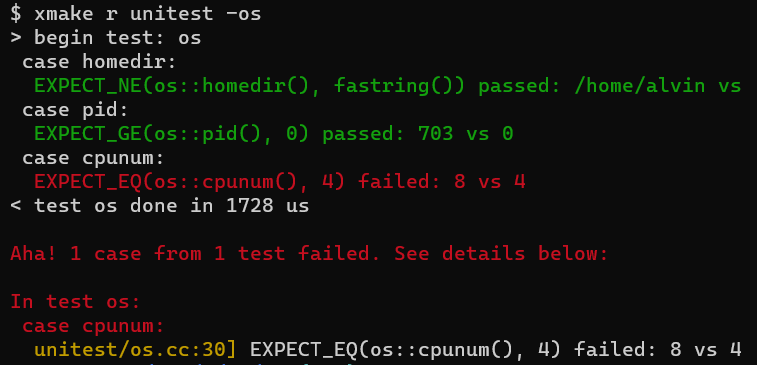

include: co/unitest.h.
#基本概念
co.unitest 是一个单元测试框架，与 google gtest 类似，但更简单易用。
#测试单元与测试用例
一个测试程序可以按功能或模块划分为多个测试单元，每个测试单元下面可以有多个测试用例。如可以给 C++ 中的一个类(或模块)定义一个测试单元，类(或模块)中的每个方法定义一个测试用例。
DEF_test(test_name) {
DEF_case(a) {
// write test code here
}
DEF_case(b) {
// write test code here
}
}
上面的例子中，DEF_test 定义了一个测试单元(实际上就是定义了一个函数)，DEF_case 则定义了测试用例，一个测试用例就相当于函数内的一个代码块。
#DEF_test
#define DEF_test(_name_) \
DEF_bool(_name_, false, "enable this test if true"); \
... \
void _co_ut_##_name_(unitest::xx::Test& _t_)
DEF_test宏用于定义测试单元，参数_name_是测试单元的名字。- 宏的第一行定义了一个 bool 类型的 flag 变量，是该测试单元的开关。如
DEF_test(os)定义了一个测试单元 os，命令行参数中可以用-os指定运行 os 中的测试代码 - 宏的最后一行定义测试单元对应的函数。
#DEF_case
#define DEF_case(name) \
_t_.c = #name; \
cout << " case " << #name << ':' << endl;
DEF_case宏用于定义测试单元中的测试用例，参数 name 是测试用例的名字，它必须在DEF_test定义的函数内部使用。- 测试单元名必须可以作为类名或变量名的一部分，测试用例名则没有这个限制，如
DEF_case(sched.Copool)也是合理的。 - 测试用例的代码，一般用一对大括号括起来，与其他测试用例隔离开来，互不影响。
- DEF_test 中也可以不包含任何 DEF_case，这种情况下，co.unitest 会创建一个默认的测试用例。
#EXPECT 断言
#define EXPECT(x) ...
#define EXPECT_EQ(x, y) EXPECT_OP(x, y, ==, "EQ")
#define EXPECT_NE(x, y) EXPECT_OP(x, y, !=, "NE")
#define EXPECT_GE(x, y) EXPECT_OP(x, y, >=, "GE")
#define EXPECT_LE(x, y) EXPECT_OP(x, y, <=, "LE")
#define EXPECT_GT(x, y) EXPECT_OP(x, y, >, "GT")
#define EXPECT_LT(x, y) EXPECT_OP(x, y, <, "LT")
EXPECT断言x为真，x 可以是值为 bool 类型的任意表达式。EXPECT_EQ断言x == y。EXPECT_NE断言x != y。EXPECT_GE断言x >= y。EXPECT_LE断言x <= y。EXPECT_GT断言x > y。EXPECT_LT断言x < y。DEF_case定义测试用例时，可以用这些宏断言，断言失败即表示测试用例不通过，终端会以红色打印出相关的错误信息。
#编写测试代码
#测试代码示例
#include "co/unitest.h"
#include "co/os.h"
DEF_test(os) {
DEF_case(homedir) {
EXPECT_NE(os::homedir(), "");
}
DEF_case(pid) {
EXPECT_GE(os::pid(), 0);
}
DEF_case(cpunum) {
EXPECT_GT(os::cpunum(), 0);
}
}
int main(int argc, char** argv) {
flag::parse(argc, argv);
unitest::run_tests();
return 0;
}
- 上面的代码定义了一个名为 os 的测试单元，os 有 3 个测试用例。
- 运行测试程序时，可在命令行参数中用
-os启用此单元测试。 - main 函数中需要先调用
flag::parse()解析命令行参数，再调用 co.unitest 提供的run_tests()方法，即可运行单元测试代码。
#默认测试用例
DEF_test(os) {
EXPECT_NE(os::homedir(), "");
EXPECT_GE(os::pid(), 0);
EXPECT_GT(os::cpunum(), 0);
}
- 上面的代码中，不包含任何 DEF_case，co.unitest 会创建一个名为 “default” 的默认测试用例。
- 较复杂的测试代码，一般不建议使用默认测试用例，最好划分成不同的 case，代码看起来更清晰些。
#构建及运行测试程序
#编译 co 自带的 unitest 代码
xmake -b unitest
- 在 coost 根目录执行上述命令，即可编译 co/unitest 目录下的单元测试代码，并生成
unitest二进制程序。
#运行所有的测试用例
xmake r unitest
- 默认运行所有测试用例。
#运行指定测试单元中的测试用例
# 仅运行 os 测试单元中的测试用例
xmake r unitest -os
# 运行 os 与 json 测试单元中的测试用例
xmake r unitest -os -json
#测试结果示例
- 测试全部通过

- 测试用例未通过
